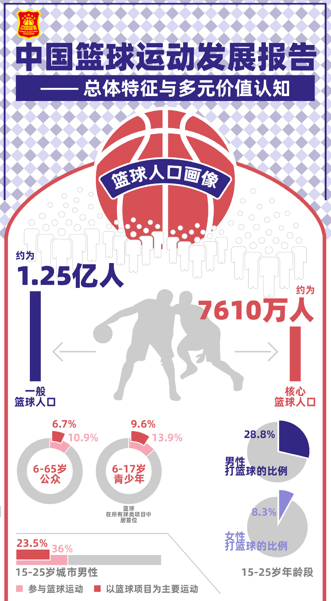

Assignment 3
This is my THIRD assignment about How to narrow the scope.
Basketball is one of the three major sports in the world and a very popular sport in China. According to research, the proportion of the population aged 6 to 65 playing basketball in the country is 10.9% and the proportion of people who play basketball as their main sport is 6.7%. This figure is the highest of all ball sports and at the top of the list of all sports. With basketball becoming more and more popular, the corresponding knowledge of basketball should not be left behind.
As we all know, as a spectator, watching a good game is certainly enjoyable, but as a former basketball practitioner, I always struggle to find information on tactics and training methods. To solve this problem, I always have to look for information on different platforms, as there is no one platform that has a complete list of information. This means that one has to consolidate information from different places on one's own and, in general, there is a lack of consistency in this information, which requires comparison during the collection process. This is certainly a waste of manpower and time.
With this problem in mind, I wanted to create a comprehensive website that could cover information about basketball training to meet the needs of basketball practitioners in different scenarios. Specifically, they can find any information they want on the website, such as pre-game warm-up advice and tactical adaptations during games, etc., so that they can be better prepared when facing different opponents.
More descriptions can be found in my journal.